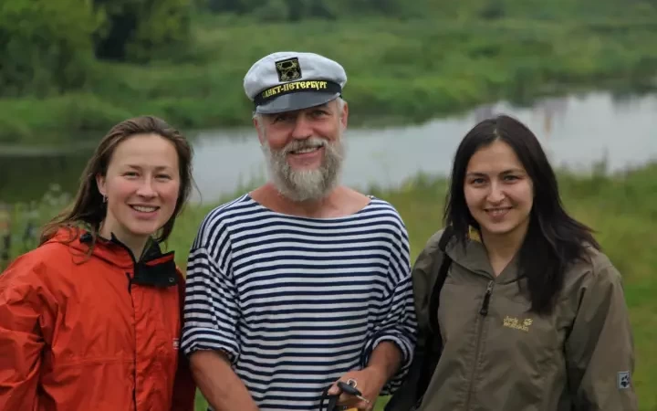
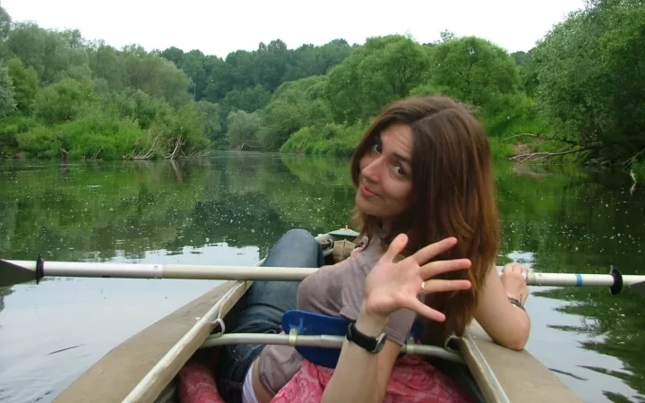

Впечатления тех, кто с нами уже ездил
Только что были на сплаве, до сих пор переполняют эмоции от красоты данных мест! Это просто непередаваемо! Бесподобно красивая природа, шикарные виды, чистейший воздух, коллектив дружный и приятный в общении! Все это располагает отключиться от серых будней и погрузиться в атмосферу полного единения с природой! Ну и конечно нельзя не отметить организаторов, ОГРОМНОЕ спасибо за чудесное проведенное время!
Мария / г. МоскваТолько что были на сплаве, до сих пор переполняют эмоции от красоты данных мест! Это просто непередаваемо! Бесподобно красивая природа, шикарные виды, чистейший воздух, коллектив дружный и приятный в общении! Все это располагает отключиться от серых будней и погрузиться в атмосферу полного единения с природой! Ну и конечно нельзя не отметить организаторов, ОГРОМНОЕ спасибо за чудесное проведенное время!
Татьяна / г. КалугаОтдыхали в выходные с 8 по 10 июля. Действительно очень хороший, яркий, запоминающийся отдых получился!!!!! Даже не верилось, что можно так здорово организовать досуг такой огромной группы (30 человек!) Ребята - организаторы справились на "УРА". Спасибо огромное! Получили море эмоций, океан позитива, все прошло замечательно и очень организованно.
Олег / г. МоскваОстались вопросы по программе? Закажите обратный звонок и мы подробно расскажем обо всем!
Как проходит путешествие
Вы оставляете заявку
Мы связываемся с вами в течение рабочего дня и обсуждаем будущую поездку: сколько будет человек, их возраст и интересы, ваши ожидания и предпочтения.
Мы готовим программу
Подбираем для вас формат экспедиции и адаптируем под вашу группу. Расписываем по часам программу и обсуждаем детали: питание и ночлег. Если необходимо — корректируем расписание.
Организуем экспедицию
Вы вносите предоплату. Если необходимо — заключаем договор. Затем мы готовим экспедицию: договариваемся о транспорте, заказываем обеды, бронируем гостиницу, планируем всю программу.
Вы приезжаете
Ваша группа прибывает в Тверь на скоростном поезде «Ласточка». Мы встречаем группу в Твери и везём в Торжок. Экспедиция началась.
Условия
Оставить заявку на тур
Или звоните: 8 (915) 077-68-24 (Москва), 8 (920) 88-69-609 (Калуга)
Дополнительная информация
О нас
Нет гостиницам, живем в гостях у местных жителей
Нас ждет гостеприимный дом Дениса и Марии Сионовых в деревне Красное рядом с рекой Протвой и местами военных сражений Наполеона.
Вкусная еда
Нас ждет домашняя деревенская еда из свежих фермерских продуктов на веранде красного дома.
Кто вас встретит в нашем Красном путешествии?

Денис Сионов
Денис – тот самый дауншифтер. Перебрался с семьей в дер. Красное из Москвы 6 лет назад. Построил дом, строит гостевой дом и осваивает реку Протву.

Маша Суворова
Маша мечтала стать каскадером, а стала делать хорошие добрые книжки для детей. Работает в детском издательстве "Мелик-Пашаев" художественным редактором. 6 лет назад рискнула с мужем Денисов и детьми переехать из столицы в деревню и не пожалела.

Владимир Кобзарь
Владимир не только иконописец, он еще и обучает иконописи в своей школе. Он же "пробил" идею Том Сойер Феста в Боровске и стал идейным вдохновителем строительство амфитеатра на берегу реки Протва.
Что включено в стоимость
Проживание, 3-х разовое питание, трансфер от ж/д станции Балабаново (для тех, кто добирается на электричке из Москвы) до дер. Красное, где мы будем жить и обратно к ж/д станции, сплав, организация соцактивностей в дер. Красное и Боровске.
Что не включено в стоимость
Проезд до жд станции Балабаново (например, на электричке из Москвы) и обратно.
Как добраться
На машине из Москвы до дер. Красное 110 км.
На электричке с Киевского вокзала в Москве до ст. Балабаново. Билет 150-350 рублей в одну сторону.